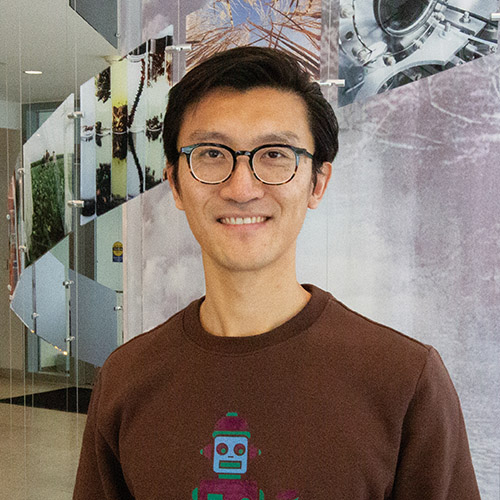

hi, i'm dave.

I am an Associate Professor of Statistics at the University of Illinois Urbana-Champaign. I'm interested in the theory and practice of using large-scale genomic data to make inferences on complex biological systems.
I am also the Director of Computational Genomics at the Carl R. Woese Institute for Genomic Biology, where I lead initiatives to enable cutting-edge analytics for our investigators and to foster cross-disciplinary collaborations between computational and biological researchers. Examples include our Spatial Omics Initiative and AI + Genomics group.
Finally, I am a co-director of the annual Mayo Clinic and Illinois Alliance Computational Genomics Course, a week-long summer workshop that provides a hands-on introduction to computational biology for clinicians and other researchers.
Education:
- Postdoctoral fellow, Biostatistics and Statistics, University of Pennsylvania
- Ph.D., Biostatistics, Harvard University
- A.B., Chemistry and Physics and A.M., Statistics, Harvard University
Contact: sdzhao@illinois.edu